来源：知识星球「南半球聊财经」星主 Jason 不跪 当日发帖数量：11 篇（时间区间 12:14 – 14:26，美西时区） 本报告全部为中文，图片为帖子原图（380px 清晰缩略图），文末附"今日全图索引"。
今日要点速览
今天 Jason 转发的内容可以串成一条主线：地缘降温 + 美联储口风 + 各国资产再定价。开头几帖围绕"特朗普在凡尔赛签署美伊谅解备忘录"展开，市场把这当成中东停火信号，油价回落、标普反弹（第 1、4 帖）；同时关税收入因大量退税而"入不敷出"，白宫考虑再加税补缺口（第 2 帖）。货币与利率是第二条线：美国国内要求人民币升值（第 3 帖），花旗、伯恩斯坦、JPM 等大行集中讨论美联储"嘴上鹰、实际偏鸽"的点阵图博弈（第 10 帖）。第三条线是结构性产业与各国股市机会：中国车企抢滩欧洲（第 5 帖）、上海甲级写字楼需求结构（第 6 帖）、JPM 上调日本股市目标（第 7 帖）、中国消费股"便宜但没人买"（第 8 帖）、新西兰可能加息（第 9 帖）、中国创新药受中美政策摩擦压制（第 11 帖）。
一句话：地缘风险下降让市场情绪转暖，但真正的钱往哪走，取决于利率路径和各国基本面的"性价比"——这正是 Jason 今天反复在不同市场上展示的同一个判断框架。
第 1 帖 · 14:26 · 凡尔赛的"美伊谅解备忘录" #金融
帖子原文：
荷兰银行：凡尔赛条约，不确定性加剧
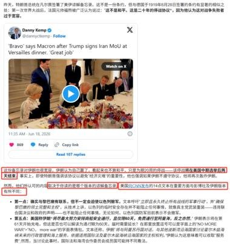
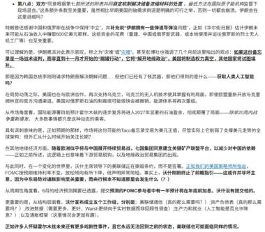
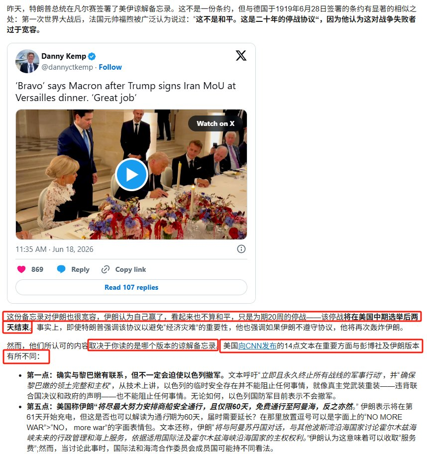
一句话核心： 荷兰银行（ABN AMRO）借"凡尔赛"这个历史符号提醒：特朗普与伊朗签的这份谅解备忘录看似带来和平，实则埋下新的不确定性。
背景与关键数据： 帖子标题用了"凡尔赛条约"作类比。图中转引的推文是记者 Danny Kemp 报道——特朗普在凡尔赛晚宴签署"美伊谅解备忘录（MoU）"后，马克龙称赞"Bravo / Great job"。荷兰银行的分析文字（图 2、图 3）指出几个要点：这份备忘录对伊朗"很宽容"，更像是为期约 20 周的停火，而且"将在美国中期选举后才结束"——也就是说，停火时间点被刻意安排得贴合美国政治日程；不同版本（美国向 CNN 发布的 14 点文本 vs 彭博社/伊朗版本）在关键措辞上存在差异，因此"谅解"到底谈成了什么，取决于你读的是哪一版。
图片解读：
- 图 1：X（推特）截图，配特朗普一行人在凡尔赛烛光晚宴签字的照片，氛围是"外交胜利秀"。
- 图 2、图 3：荷兰银行逐条拆解备忘录条款（黎巴嫩、以色列撤军、核设施等），强调文本模糊、各方解读不一，真正的约束力存疑。
为什么重要 / 对市场的含义： 中东只要"看上去要停火"，油价的地缘风险溢价就会被挤掉，这是后面第 4 帖里"油价下跌、标普反弹"的源头。但荷兰银行点出的"不确定性加剧"是在提醒：这种和平是脆弱的、有时间表的（绑定美国中期选举），一旦 20 周后协议生变，油价的地缘溢价随时会卷土重来。对交易者而言，这意味着当前的"风险偏好回暖"可能是短期的。
延伸知识： 为什么用"凡尔赛条约"作比喻很有深意？1919 年的《凡尔赛和约》对战败的德国条件苛刻，法国元帅福煦当时留下名言——这不是和平，而是"二十年的休战"，结果一语成谶，20 年后二战爆发。荷兰银行反向借用这个典故：这次的备忘录是反过来"过于宽容"，但同样埋着"休战而非真和平"的隐患。"谅解备忘录（MoU）"和"条约（Treaty）"的法律效力天差地别——条约通常需要立法机构（如美国参议院）批准、具约束力；MoU 更像"君子协定"，没有强制执行力，这也是市场该对这份文件打折扣的原因。
第 2 帖 · 14:15 · 关税"入不敷出"：退税超过征收 #其他国家经济
帖子原文：
bloomberg：关税收入现在从美国财政部的金库流出的速度超过了进账速度，五月份向进口商退还了近 220 亿美元此前征收的关税。白宫正在权衡通过提高持久进口关税率来恢复收入，本月早些时候发布的提案可能将美国平均关税提高 0.6 个百分点。
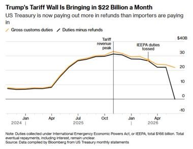
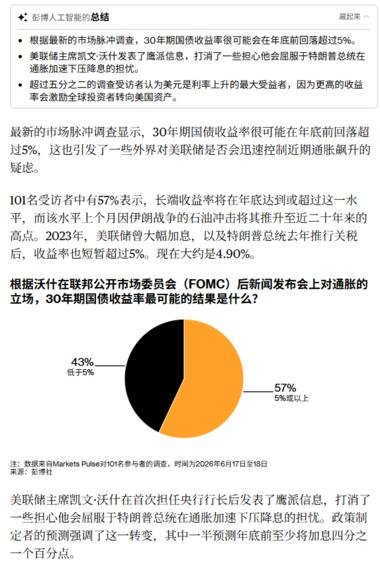
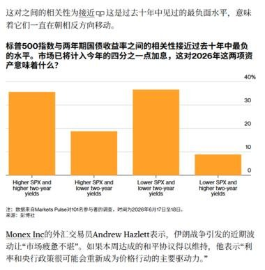
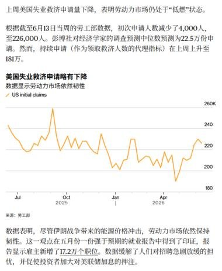
一句话核心： 因为大量退还此前征收的关税，美国财政部的"关税净收入"已经快速塌到接近零甚至为负，白宫想再加税补窟窿；同组配图还顺带覆盖了长端利率与就业。
背景与关键数据： 关键数字是"5 月退还近 220 亿美元"。为什么要退？此前不少关税是依据 IEEPA（《国际紧急经济权力法》） 征收的，如果这些关税在法律上被推翻（图中标注 "IEEPA duties tossed"），政府就得把之前收的钱退回给进口商。提案是把美国平均关税率再提高 0.6 个百分点来恢复收入。本帖的四张图实为一组彭博/Markets Pulse 市场速览，覆盖关税、长端美债、股债相关性和就业。
图片解读：
- 图 1（彭博）：标题 "Trump's Tariff Wall Is Bringing in $22 Billion a Month"。两条线——金色是"关税总征收（gross customs duties）"，黑色是"扣除退税后的净额（duties minus refunds）"。两线在 2025 年中"关税收入高峰"时贴合在 30 亿+/月之上，但到 2026 年随着 IEEPA 关税被推翻，黑色净额线断崖式下跌到 0 甚至负值——直观说明"收得多、退得更多"。
- 图 2：Markets Pulse 对 101 名受访者的调查，问"30 年期美债收益率年底最可能的结果"，57% 认为会到/超过 5%，43% 认为低于 5%；配文是美联储理事沃勒（Waller）的鹰派表态推升了长端收益率担忧。
- 图 3：柱状图显示"标普 500 指数与 2 年期美债收益率的相关性"已降到近十年最负水平（即股债越来越反向走），市场押注今年还有"四分之一点"加息。
- 图 4：美国初请失业金人数曲线，最新 22.6 万人（环比减 4000），处于"低燃"状态——劳动力市场仍有韧性。
为什么重要 / 对市场的含义： 这组图其实在讲一个连锁逻辑：关税净收入塌方 → 财政缺口压力 → 可能再加税或多发债 → 长端美债收益率上行压力 → 美联储口风偏鹰。对资产价格而言，长端利率（30 年美债）如果真的站上 5%，对成长股估值、房贷利率、政府利息支出都是压力点。
延伸知识： "毛收入 vs 净收入"的差别是看财政数据的基本功——关税表面每月进账 220 亿，但扣掉退税后可能所剩无几，只看"征收额"会高估政府的实际进账。另一个概念是点阵图（dot plot）作为"嘴炮工具"（第 10 帖会深入）：美联储官员有时故意把"加息预期"摆出来，让市场自己收紧金融条件，相当于不真加息也能起到压通胀的效果。
第 3 帖 · 14:10 · 美国施压人民币升值 #金融
帖子原文：
bloomberg：美国内部参议员正在向贝森特施压，希望带动 G7 一起呼吁人民币大幅升值，背景是在高顺差模式下，人民币与美元在过去 4 年基本持平，对欧元贬值约 9%。本周早些时候的 G7 联合声明已经点到了这点。去年 9 月贝森特也被问及，他当时表示这是欧洲的问题，不是美国的问题。
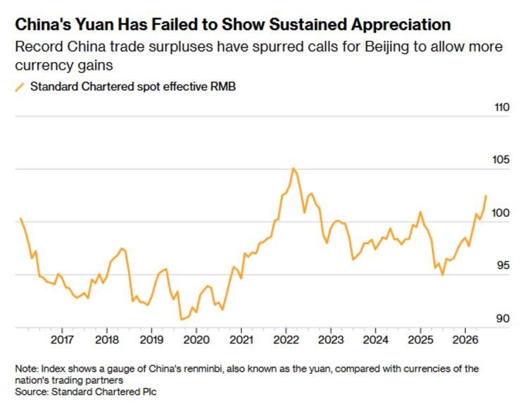
一句话核心： 在中国创纪录的贸易顺差下，美国部分政界人士想拉上 G7 一起逼人民币升值。
背景与关键数据： 核心矛盾是"中国顺差很大，但人民币没怎么升值"。数据上：过去 4 年人民币兑美元基本持平，但兑欧元贬了约 9%。贝森特（美国财长）去年还推说"这是欧洲的问题"，现在 G7 联合声明已经点名。
图片解读： 图为彭博图表，标题 "China's Yuan Has Failed to Show Sustained Appreciation（人民币始终没能持续升值）"。纵轴是渣打银行编制的"人民币实际有效汇率指数"（衡量人民币对一篮子贸易伙伴货币的强弱），区间约 90–105。可以看到 2022 年初冲到约 105 的高点后一路回落，2025 年中跌到约 94 的低点，目前回升到约 101。趋势告诉我们：尽管中国顺差屡创新高，人民币的"综合汇率"却在区间里反复、并未跟随顺差持续走强。
为什么重要 / 对市场的含义： 汇率是国际竞争的"价格总开关"。如果一国顺差巨大却让本币保持偏弱，相当于变相补贴出口、抢别人的市场份额，这就是 G7 想施压的逻辑。一旦人民币被迫升值，利好的是进口、海外购买力和以人民币计价的资产，承压的是中国出口企业的价格竞争力。这条新闻是观察"中美/中欧贸易摩擦是否升级"的风向标。
延伸知识： "实际有效汇率（REER）"比"人民币兑美元"这一个双边汇率更能反映真实竞争力——它把人民币对所有主要贸易伙伴的汇率按贸易权重加权，再剔除通胀。这就是为什么"对美元持平"但"对欧元贬 9%"时，综合看人民币其实是偏弱的。历史类比是 1985 年的《广场协议》：当年美国联合 G5 逼日元、马克升值以缓解美国逆差，日元两年内几乎翻倍，被很多人视为日本后来资产泡沫的导火索之一——这也是市场一听到"逼某国货币升值"就格外警惕的原因。
第 4 帖 · 14:04 · 中东降温、油价回落、标普反弹 #金融
帖子原文：
bloomberg：万斯对以色列鹰派进行回击，号称为以色列已经做得够多了。目前海峡 60 天后是否收费依然是关键问题，特朗普刚发帖表示 3000 亿美元重建费用是假新闻。高盛表示霍尔木兹海峡的石油流量可能会恢复到战前水平的约 70%。剩余的可能正在加速扩建绕开海湾的通道。油价下跌华尔街反弹，推动标普 500 指数上涨 1.1%。
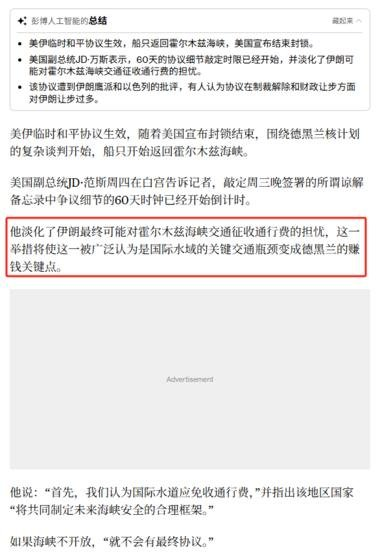
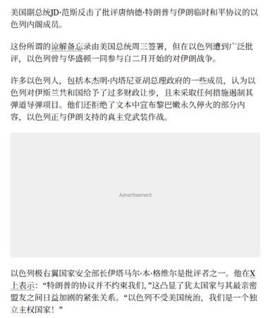
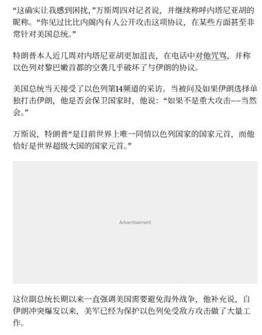
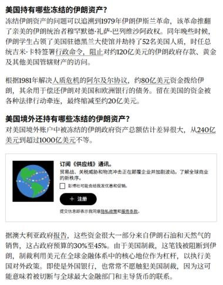
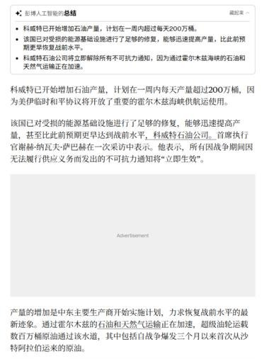
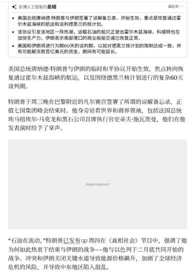
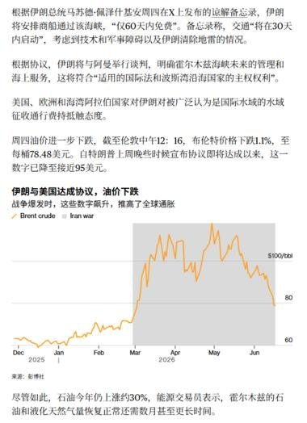
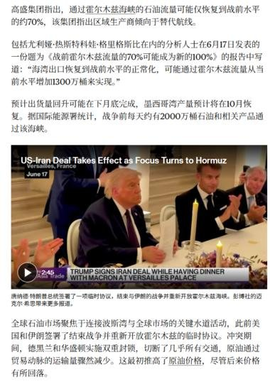
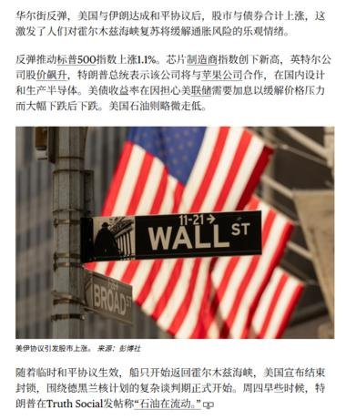
一句话核心： 美国政府内部（副总统万斯）给以色列鹰派降温，加上霍尔木兹海峡石油流量有望恢复，油价跌、股市涨。
背景与关键数据： 几个关键点：① 万斯公开回击以色列鹰派，传递"美国不想继续升级"的信号；② 高盛估计霍尔木兹海峡的石油流量可恢复到战前约 70%，剩下的部分靠加速扩建绕开海湾的输油通道弥补；③ 特朗普否认"3000 亿美元重建费用"的说法是假新闻；④ 市场反应：油价下跌、标普 500 上涨 1.1%。9 张图多为相关推文与新闻截图，记录了这些表态和市场反应的来龙去脉。
图片解读： 这 9 张为推文/新闻截图序列，内容围绕"美以分歧、霍尔木兹海峡通航、油价与美股反应"，逐条佐证正文的叙事链条。
为什么重要 / 对市场的含义： 霍尔木兹海峡是全球最关键的能源咽喉，全球约 1/5 的海运石油经此通过。只要它"通了/要通了"，原油的地缘风险溢价就被打掉，这是今天"油价跌→通胀预期降→股市涨"的核心驱动。它也和第 1 帖的"美伊备忘录"呼应：地缘降温是今天市场情绪的总背景。
延伸知识： **"风险溢价（risk premium）"**这个概念很关键——油价里其实包含一块"万一打起来供应中断"的恐慌加价。当冲突缓和，这块溢价被释放，油价就回落，哪怕实际供需没怎么变。油价又是通胀的上游：油价跌→运输、化工、汽油价格跟着降→通胀压力减小→市场更敢押美联储降息→利好股票估值。所以"中东—油价—通胀—利率—股市"是一条必须记住的传导链。
第 5 帖 · 13:29 · 中国汽车抢滩欧洲 #经济数据
帖子原文：
日经：中国汽车在欧洲的影响力越来越大。美国智库 Rhodium Group 的统计显示，截至 2025 年 12 月，中国生产的汽车占欧盟新车销售的 9.3%，比 2023 年 1 月上升 7.1 个百分点。预计 2026 年将超过 10%。在纯电动汽车（EV）比例很高的挪威已达到 14%，在意大利和西班牙也达到 9%。对于中国汽车制造商来说，进驻海外市场也是当务之急。中国汽车工业协会的统计显示，1~5 月除去出口的中国国内销量为 814 万辆，同比减少 20.6%。汽车购置税的减免措施缩小，产生了较大影响。
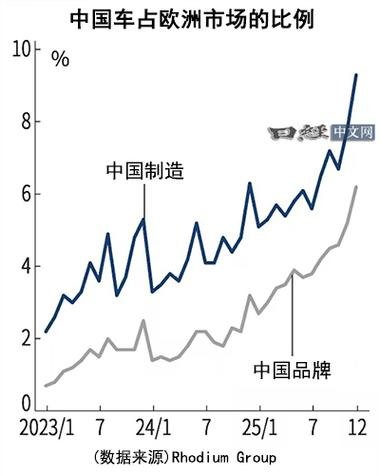
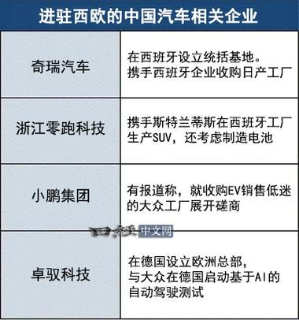
一句话核心： 中国车在欧洲市场份额逼近 10%，而国内销量同比大跌 20%——出海是被"内卷+购置税退坡"逼出来的当务之急。
背景与关键数据： 两组数字最关键：① 海外——中国产汽车占欧盟新车销售 9.3%（较 2023 年初 +7.1 个百分点），挪威已达 14%，意大利、西班牙约 9%；② 国内——1~5 月国内销量（剔除出口）814 万辆，同比减少 20.6%，主因是汽车购置税减免力度缩小。
图片解读：
- 图 1（日经）：折线图"中国车占欧洲市场的比例"，纵轴 0–10%，横轴 2023/1 到 2025/12。深蓝线"中国制造"（含在中国生产、外资品牌）一路爬升到约 9.3%；灰线"中国品牌"（如比亚迪等自主品牌）较低，约 6%。两条线都在 2025 年下半年明显加速上扬，说明渗透在提速。
- 图 2（日经表格）："进驻西欧的中国汽车相关企业"——奇瑞（西班牙设统括基地、收购日产工厂）、浙江零跑科技（携手斯特兰蒂斯在西班牙产 SUV）、小鹏集团（洽购大众低迷工厂）、卓驭科技（德国设欧洲总部、与大众做 AI 自动驾驶测试）。说明中国车企不只是"出口卖车"，而是在欧洲本地化建厂、收购、合资。
为什么重要 / 对市场的含义： 这是"产业全球化"和"国内通缩式内卷"的一体两面。国内需求疲软（销量 -20%）把车企推向海外；而在欧洲本地建厂，既能绕开可能的进口关税，也能贴近市场。对投资者，这关系到中国汽车产业链（电池、零部件、智驾）的全球份额故事，也关系到欧洲本土车企（大众等）的竞争压力。
延伸知识： 注意区分**"中国制造"与"中国品牌"——前者包括特斯拉上海、宝马等在华生产再出口欧洲的车，后者才是比亚迪、蔚来这类自主品牌。两条线的差距，就是"中国作为生产基地"和"中国作为品牌力量"之间的距离。另一个概念是"购置税退坡"**：政府对买车的税收优惠如果减少，等于变相涨价，会立刻压制需求——这是政策对消费的"即时开关"，5 月国内销量大跌就是直接例子。
第 6 帖 · 13:24 · 上海甲级写字楼租户普查 #经济数据
帖子原文：
CBRE《2025 年上海甲级办公楼租户普查》：从行业构成来看，上海甲级办公楼市场 2025 年金融业（27%）、制造业（26%）及 TMT（16%）仍为前三大需求来源，持续构成市场基本盘；专业服务业占比回升至 12%，进一步推动需求结构多元化。 从规模结构来看，大面积租户（10,000 平方米及以上）需求较 2022 年有所回落，占比由 28% 降至 26%。一方面，企业更加注重降本增效，大面积扩租意愿下降，更倾向通过空间整合提升效率；另一方面，部分金融机构回归自持物业，减少对租赁市场的依赖。
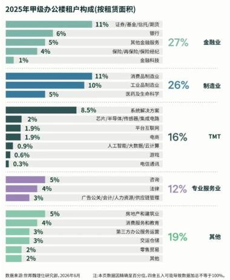
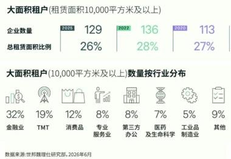
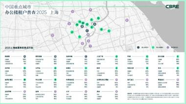
一句话核心： 上海顶级写字楼需求仍由金融、制造、TMT 三大行业撑着，但"大客户"在收缩面积、降本增效。
背景与关键数据： 行业占比：金融业 27%、制造业 26%、TMT 16%、专业服务业回升至 12%。大面积租户（≥1 万平米）占比从 2022 年的 28% 降到 2025 年的 26%，企业数量 136→129 家。
图片解读：
- 图 1：横向条形图"2025 年甲级办公楼租户构成（按租赁面积）"。金融业 27%（其中证券/基金/信托/期货 11%、银行 6%、其他金融服务 5%、保险/再保险 4%、金融科技 1%）；制造业 26%；TMT 16%（含解决方案 8.5%、芯片/半导体/传感器 1.9%、AI/大数据/云计算 0.9% 等）；专业服务业 12%；其他 19%。一图看清"谁在租上海最好的办公楼"。
- 图 2：大面积租户（≥1 万平米）的三年对比——2025 年 129 家、占总租赁面积 26%；2022 年 136 家、28%；2020 年 113 家、27%。按行业分布：金融业 32%、TMT 19%、消费品 8%、专业服务业 8%、第三方办公 8%、医药及生命科学 7%、工业制造 5%、其他 9%。
- 图 3：补充的细分图表，延续上述结构性结论。
为什么重要 / 对市场的含义： 甲级写字楼的租赁需求是实体经济景气度的"晴雨表"——企业肯不肯多租好楼，反映扩张还是收缩。"大客户收缩面积、回归自持"说明企业在过冬、抠成本，这对商业地产租金、REITs、写字楼空置率都是偏弱信号。同时"专业服务业回升、需求多元化"是结构里的一抹亮色。
延伸知识： "甲级办公楼（Grade A office）"指地段、硬件、物业管理最顶级的写字楼，租户多是大金融机构和头部企业，因此它的需求最能代表"高端实体经济"的温度。另一个有意思的现象是"售后回租"的反面——金融机构回归自持：当企业觉得长期成本划算或想锁定核心办公资产时，会选择自己买楼而非租楼，这会从需求端抽走租赁市场的"大客户"，压制写字楼租金。
第 7 帖 · 13:17 · JPM 上调日本股市目标 #股市
帖子原文：
JPM：我们认为日本股市 2026 年下半年仍会继续上涨，而且驱动力不只是估值扩张，而是企业盈利上修、AI 半导体超级周期、企业改革、资金流入和 ROE 改善；我们把 2026 年底目标上调到日经平均 75,000 点、TOPIX 4,400 点。来自于我们的基准假设：FY26 TOPIX EPS 同比增长约 11%，年底 12 个月前瞻 PER 约 17 倍。为什么日经比 TOPIX 强这么多？因为日经平均里 AI 相关股票权重很高。AI 相关股票约占日经平均市值的一半，而 TOPIX 中约占三成。日本股市不是只靠 AI，也在靠企业改革提高 ROE。 风险则是日元贬值，日元贬值不是越多越好。尤其是如果美元兑日元从 160 日元附近继续进一步贬值，会带来两个负面影响：第一，进口价格上涨，推高日本国内物价，对家庭形成压力；第二，对海外投资者来说，日元贬值会侵蚀日本股票的外币回报。这点和过去"日元贬值利好日本出口股"的传统逻辑不同。温和日元贬值可以利好企业盈利，但过度日元贬值会伤害家庭、通胀和海外资金回报。如果未来美联储偏鹰、美元强势，日元继续贬值，就会成为日本股市风险。另外日本长期利率快速上升也是风险。不过日本央行已经注意到基调性通胀正在接近 2%，未来加息节奏可能会加快。若加息带来温和日元升值修正，反而可能对日本股市有利。
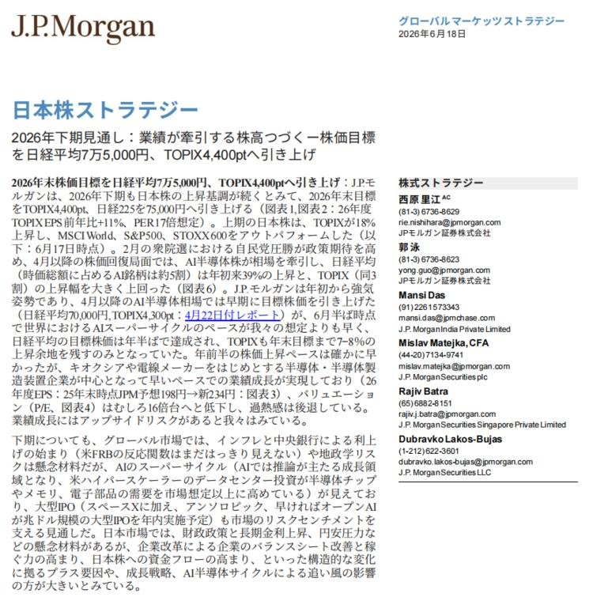
一句话核心： JPM 看多日本股市，把 2026 年底目标上调到日经 75,000 / TOPIX 4,400，靠的是企业盈利+AI 半导体+公司治理改革，而非单纯估值拔高。
背景与关键数据： 目标价：日经平均 75,000 点、TOPIX 4,400 点。假设：FY26 TOPIX EPS 同比 +11%，年底 12 个月前瞻 PER 约 17 倍。关键洞察：日经比 TOPIX 强，是因为 AI 相关股占日经市值约一半、占 TOPIX 约三成。最大风险是日元过度贬值（美元/日元在 160 附近若再贬）。
图片解读： 图为 J.P. Morgan《日本株ストラテジー（日本股策略）》报告封面（日文），日期 2026 年 6 月 18 日，副标题正是"上调年底目标到日经 75,000、TOPIX 4,400"，并列出策略团队成员。是 Jason 引用的一手研报。
为什么重要 / 对市场的含义： 日本股市这轮上涨的"叙事"很完整：① 盈利真增长（不是估值泡沫）；② 搭上全球 AI 半导体超级周期；③ 东京交易所推动的公司治理改革逼企业提高 ROE、回购分红。但它有个"汇率悖论"：传统上日元贬值利好出口股，可贬过头会推高进口通胀、伤害家庭购买力，还会让海外投资者的"美元计价回报"缩水。所以日元"温和贬值"是甜点、"过度贬值"是毒药。
延伸知识： 解释两个词。ROE（净资产收益率）衡量公司用股东的钱赚钱的效率，日本企业长期 ROE 偏低（爱囤现金），这轮"企业改革"的核心就是逼它们把闲钱用起来、提高 ROE，这是估值重估的底层逻辑。"前瞻 PER（forward P/E）"用未来 12 个月的预期盈利算估值，比用过去盈利的"静态 PER"更贴近交易逻辑——JPM 说"17 倍前瞻 PER 不算贵、过热感后退"，就是在说当前价格相对未来盈利还有空间。另外注意对冲投资者的"汇率—回报"双杀：买日股若不对冲日元，日元一贬，股价涨的钱可能被汇兑亏损吃掉。
第 8 帖 · 13:12 · 中国消费股：便宜但没人买 #经济数据
帖子原文：
JPM：中国消费股估值已经很便宜，但市场仍不愿意买，因为盈利还没真正见底。2026 年至今，市场对中国消费股盈利预期继续下修：必需消费品 2026 年一致预期 EPS 下调 9%；可选消费品 2026 年一致预期 EPS 下调 7%；JPM 覆盖公司中，约 80% 年初至今盈利预期被下调；下修最明显的是白酒、美妆等板块。 JPM 中国宏观团队预计，中国 PPI 在 2026 年 2–4 季度分别为 3.5% / 3.9% / 3.5%，CPI 为 1.3% / 1.4% / 1.1%，这会使 CPI-PPI 缺口扩大到 -2.9 个百分点。PPI 涨得比 CPI 快，意味着企业成本上升，但消费者价格传导不顺畅。也就是说：上游涨价，消费者不一定愿意接受涨价，利润率会被挤压。建议不要买"消费复苏"这个大故事，要买真正能执行、能提价、能控成本、能扩张的公司。
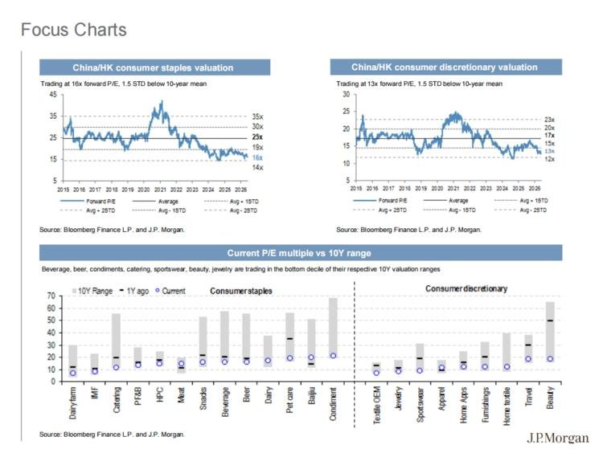
一句话核心： 中国消费股估值已到历史低位，但因为盈利预期还在被下调、还没见底，市场宁愿等也不愿买——选股要挑"能提价、能控成本"的真本事公司。
背景与关键数据： 估值便宜：必需消费品 16 倍前瞻 PE（低于 10 年均值 1.5 个标准差）、可选消费品 13 倍（同样低 1.5 个标准差）。但盈利还在跌：2026 年 EPS 预期，必需消费 -9%、可选消费 -7%，覆盖公司约 80% 被下调，白酒、美妆最惨。宏观上 CPI-PPI 缺口扩大到 -2.9 个百分点。
图片解读（JPM Focus Charts）：
- 左上："China/HK consumer staples valuation（必需消费品估值）"，前瞻 PE 从 2021 年约 40 倍一路回落到当前约 16 倍，低于 10 年均值 1.5 个标准差。
- 右上："consumer discretionary（可选消费品）"，前瞻 PE 从约 25 倍跌到约 13 倍，同样深跌。
- 下方："Current P/E vs 10Y range"——灰色条是过去 10 年估值区间，黑线是 1 年前、蓝圈是当前。几乎所有子板块（啤酒、白酒、调味品、餐饮、运动服、美妆、珠宝等）的蓝圈都贴在区间最底部 10% 分位，直观显示"全行业都很便宜"。
为什么重要 / 对市场的含义： 这帖讲的是"便宜≠该买"的经典陷阱。估值低只是必要条件，盈利见底才是充分条件。在盈利还在往下修时贸然抄底，可能买在"价值陷阱"里。JPM 的建议很实用：放弃"整体消费复苏"的宏大叙事，转向自下而上选个股——挑那些能真正提价、控成本、逆势扩张的龙头。
延伸知识： 重点理解 CPI-PPI 剪刀差。CPI 是消费者买东西的价格，PPI 是工厂出厂价（上游成本）。当 PPI 比 CPI 涨得快（缺口为负且扩大），意味着企业的原材料/成本在涨，但没法把成本顺利转嫁给消费者，利润率就被两头挤压——这正是中国消费企业盈利持续被下修的根源。另一个工具是**"标准差（STD）"看估值**：说"低于 10 年均值 1.5 个标准差"，是用统计语言表达"现在便宜到历史上很少见的程度"，但"很便宜"在熊市里也可能"更便宜"。
第 9 帖 · 12:27 · 用 AI 综合多家投行，研判新西兰利率 #其他国家经济
帖子原文：
关于纽村利率路径，把几份报告喂给了 AI，得出： 你现在看了 Citi、高盛、JPM 周报和这份 JPM 利率策略报告。综合起来共同结论是：新西兰经济比原先想象更强，RBNZ 短期加息概率明显上升。不同点是：Citi 更激进：认为负产出缺口已经消除；高盛更谨慎：认为仍有产出缺口，但支持两次小幅预防性加息；JPM：认为"显著过剩产能"的说法不再稳固，足以支持首次加息。比较合理的政策路径大概是：OCR 2.25% → 2.50% → 2.75%，之后看数据。真正的分歧在于是否会到 3.25%。从高盛和 JPM 目前措辞看，他们并不认为需要很激进。
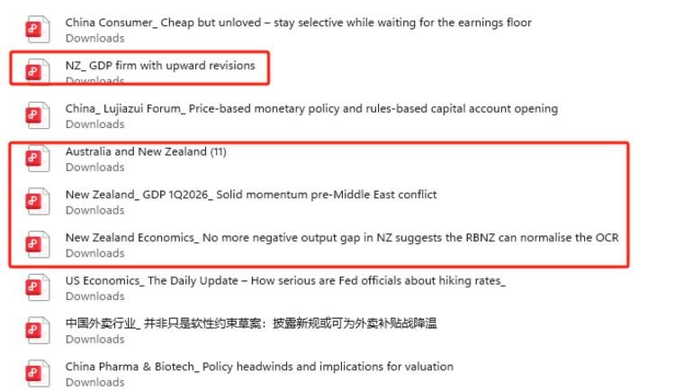
一句话核心： Jason 把 Citi、高盛、JPM 的多份报告"喂给 AI"做综合，结论是新西兰经济比预期强、央行（RBNZ）短期加息概率上升，路径大致 OCR 2.25%→2.50%→2.75%。
背景与关键数据： "纽村"是华人对新西兰的戏称。三家投行的共识是 RBNZ 短期加息概率上升，分歧在激进程度：Citi 最鹰（认为负产出缺口已消除）、高盛较谨慎（仍有缺口但支持两次预防性加息）、JPM 居中。基准路径 OCR（官方现金利率）2.25%→2.50%→2.75%，真正的争议是会不会一路加到 3.25%。
图片解读： 图为一份研报文件清单截图（PDF 列表），可见标题包括"NZ_GDP firm with upward revisions（新西兰 GDP 强劲且被上修）"、"New Zealand_GDP 1Q2026_Solid momentum pre-Middle East conflict"、"New Zealand Economics_No more negative output gap in NZ suggests the RBNZ can normalise the OCR（新西兰已无负产出缺口，RBNZ 可使 OCR 正常化）"——也就是 Jason 喂给 AI 的原始素材来源。
为什么重要 / 对市场的含义： 一方面是方法论示范——用 AI 把多家投行观点"求同存异"，快速提炼共识与分歧，是普通投资者跟读研报的高效方式。另一方面，RBNZ 若真转向加息，会利好纽元、利空纽债价格，也是观察"全球央行从降息转向再加息"这一潜在拐点的样本（呼应美国第 10 帖、日本第 7 帖）。
延伸知识： 理解**"产出缺口（output gap）"**这个央行最看重的概念：它是"经济实际产出"与"不引发通胀的潜在产出"之差。缺口为正（经济过热、超负荷运转）→ 通胀压力大 → 该加息；缺口为负（经济有闲置产能）→ 通胀压力小 → 可降息。三家投行的全部分歧，本质就是在吵"新西兰的产出缺口到底还有没有、有多大"。另一个词 **OCR（Official Cash Rate）**是新西兰版的"基准政策利率"，等同于美国的联邦基金利率目标。
第 10 帖 · 12:14 · 花旗：FOMC 看似鹰、实则会转鸽 #金融
帖子原文：
花旗：昨天 FOMC 看起来很鹰，18 个点阵图中有 9 个预计今年剩余四次 FOMC 会议会加息，但我们不这么认为。美联储了解点阵图本身就是一种政策工具。通过让市场相信"美联储可能加息"，短端收益率上升、金融条件收紧，实际效果类似对通胀下刀。而我们也看到了他们预期 2027 年会重新降息，所以只要油价回落、核心通胀降温、就业走弱，它仍会回到降息路径。我们的基准预期是，美联储可能在 9 月转鸽，并在 10 月重新降息计价。
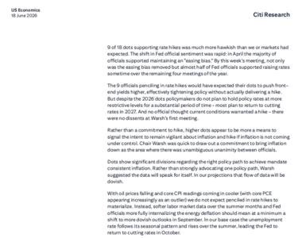
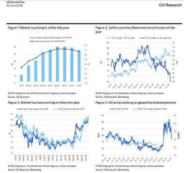
一句话核心： 花旗认为昨晚的 FOMC 点阵图"鹰得有水分"——美联储是用"可能加息"的预期当工具来收紧金融条件，花旗预测它最终会在 9 月转鸽、10 月重新计价降息。
背景与关键数据： 点阵图里 18 位官员有 9 位预计今年剩余 4 次会议要加息（看似很鹰）。但花旗的判断是：① 点阵图本身就是"嘴炮工具"，让市场相信要加息→短端利率上升→金融条件收紧→等于变相压通胀；② 官员同时预期 2027 年会重新降息，说明这不是真正的紧缩转向。基准预测：9 月转鸽、10 月重新计价降息。触发条件是油价回落、核心通胀降温、就业走弱。
图片解读：
- 图 1（Citi Research 文字）：标题"How serious are Fed officials about hiking rates（美联储官员对加息到底多认真）"，逐段解释点阵图作为预期管理工具的逻辑，以及只要 PCE/CPI 转凉、就业走弱，年内仍可能回到降息。
- 图 2（Citi 四张图）：
- Figure 1：市场正在为"今年加息"定价（柱状逐月累积的加息概率上升）。
- Figure 2："2s10s 曲线今年以来走平"（2 年与 10 年美债利差收窄）。
- Figure 3：市场对 2026、2027 年的联邦基金期货定价——今年押加息、明后年押降息。
- Figure 4："油价因地缘事件飙升"（原油与美国平均汽油价格），呼应第 4 帖的地缘—油价主题。
为什么重要 / 对市场的含义： 这是今天最"干货"的一帖，讲透了美联储的"预期管理"艺术。关键启示：不要只看点阵图的表面点数，要看美联储真正的意图。如果花旗对了，年内某个时点市场会从"怕加息"切换到"押降息"，那将是股债的重要拐点——短端利率回落、成长股估值受益。
延伸知识： 点阵图（dot plot）是每位美联储官员对未来利率的匿名预测点，市场拿它当"官方指引"。但正因为官员知道市场盯着它，点阵图就成了一种"预期管理/前瞻指引（forward guidance）"工具：摆出鹰派点位，不用真加息，光靠市场自己把利率推高、金融条件收紧，就能起到压通胀的效果——这就是花旗说的"类似对通胀下刀"。再补一个**"收益率曲线（2s10s）"**：2 年期反映"近期政策利率预期"，10 年期反映"长期增长+通胀预期"，两者利差走平甚至倒挂，常被视为"市场担心紧缩过头、未来要降息/衰退"的信号。
第 11 帖 · 12:14 · 伯恩斯坦：中国创新药的"政策折价" #经济数据
帖子原文：
伯恩斯坦：近期中国医疗板块下跌的触发因素，是投资者担心中美政策限制升级。中国创新药产业的"早期研发能力"已经快速崛起，但真正的全球商业价值仍高度依赖美国市场；美国政策正在从资本、数据、授权交易、供应链全链条增加摩擦。 我们把药物开发分成：临床前研究；一期/二期临床；三期临床；商业化几个阶段。前两个阶段可以全球化，中国已经很强；但从三期临床开始，体系变得明显美国中心化。要拿 FDA 批准，通常必须有美国三期临床，全球多区域临床试验也常常是必要条件。2025 年美国新增三期临床中，中国源头药物少于 50 个，而美国新增三期总数约 400–500 个，占比不超过 10%；2021 年至 2026 年迄今，FDA 批准的中国源头创新药只有约 10 个，占 230 多个批准中的不到 5%；2025 年美国品牌药销售约 5500 亿美元，中国源头药物销售约 50 亿美元，只占约 1%。也就是说瓶颈不是 asset generation，不是中国能不能产生药物资产；瓶颈是 conversion into global value，即能不能把这些资产转化成全球销售和全球利润。在全球化资产中，超过 80% 的情况是由全球合作伙伴赞助美国和全球三期临床；中国公司自己做全球临床的情况少于 20%。我们认为市场现在可能已经按过度悲观情景定价，优质中国创新药资产并不是逻辑破产，而是从"高速全球化估值"进入"政策折价后的精选时代"。
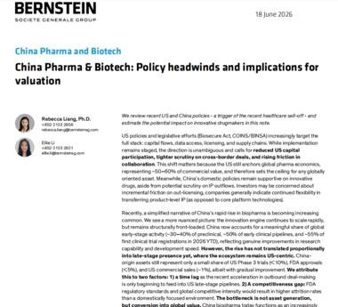
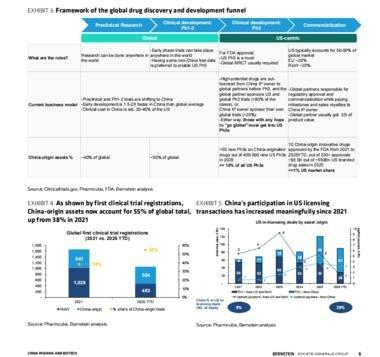
一句话核心： 中国创新药"会造药"（早期研发强），但"难变现"（全球销售高度依赖美国市场），中美政策摩擦正卡住这道变现关口——市场可能已过度悲观，进入"政策折价后的精选时代"。
背景与关键数据： 一串扎心的数字说明"瓶颈在变现而非研发"：2025 年美国新增三期临床中，中国源头药物 <50 个，占美国总数（400–500 个）不到 10%；2021–2026 年 FDA 批准的中国源头创新药仅约 10 个，占 230 多个批准的 <5%；2025 年美国品牌药销售约 5500 亿美元，中国源头药物销售约 50 亿美元，只占约 1%。在全球化资产里，>80% 是由全球合作伙伴赞助美国三期临床，中国公司自己做全球临床的 <20%。
图片解读： 图为 Bernstein（伯恩斯坦/SG 集团）研报封面《China Pharma & Biotech: Policy headwinds and implications for valuation（中国医药与生物科技：政策逆风及对估值的影响）》，日期 2026 年 6 月 18 日，开篇即点明"美国政策行动正全链条增加摩擦"以及"瓶颈不是造药资产、而是把资产转化为全球价值"。第二张为报告内文，延续这一论证。
为什么重要 / 对市场的含义： 这帖给中国创新药的下跌提供了一个"结构性解释框架"：不是中国不会研发，而是全球商业化的"最后一公里"被美国卡住（FDA 三期临床、市场准入）。这意味着政策摩擦才是估值的核心变量。伯恩斯坦的结论偏建设性——市场可能定价过度悲观，优质资产的逻辑没破产，但投资从"贝塔（行业普涨）"转向"阿尔法（精选个股）"。
延伸知识： 理解新药开发的"漏斗"：临床前 → 一/二期（小规模验证安全和初步有效）→ 三期（大规模、决定能否上市）→ 商业化。三期临床和 FDA 批准是最贵、最关键、也最"美国中心"的环节——全球最大的药品市场是美国，拿不到 FDA 批文、进不了美国销售，再好的药也难变成大钱。这就是伯恩斯坦区分的两个英文短语：asset generation（造得出药）vs conversion into global value（把药变成全球利润）——中国强在前者，卡在后者。这也解释了为什么很多中国 biotech 选择把药"授权（license-out）"给跨国药企，由对方去做美国三期和销售。
今日全图索引
| 帖号 | 时间 | 主题 | 标签 | 图片文件 |
|---|---|---|---|---|
| 1 | 14:26 | 凡尔赛美伊谅解备忘录（荷兰银行） | #金融 | post1_img1~3.jpg |
| 2 | 14:15 | 关税退税超征收/长端利率/就业 | #其他国家经济 | post2_img1~4.jpg |
| 3 | 14:10 | 美国施压人民币升值 | #金融 | post3_img1.jpg |
| 4 | 14:04 | 中东降温、油价跌、标普涨 | #金融 | post4_img1~9.jpg |
| 5 | 13:29 | 中国汽车抢滩欧洲 | #经济数据 | post5_img1~2.jpg |
| 6 | 13:24 | 上海甲级写字楼租户普查（CBRE） | #经济数据 | post6_img1~3.jpg |
| 7 | 13:17 | JPM 上调日本股市目标 | #股市 | post7_img1.jpg |
| 8 | 13:12 | 中国消费股：便宜但没人买（JPM） | #经济数据 | post8_img1.jpg |
| 9 | 12:27 | AI 综合投行研判新西兰利率 | #其他国家经济 | post9_img1.jpg |
| 10 | 12:14 | 花旗：FOMC 看似鹰实则转鸽 | #金融 | post10_img1~2.jpg |
| 11 | 12:14 | 伯恩斯坦：中国创新药政策折价 | #经济数据 | post11_img1~2.jpg |
说明：图片为知识星球已登录页面提取的帖子原图（缩略图，约 380px 宽，足够看清图表趋势与主要数字）。本报告由「南半球聊财经」每日跟读自动化任务生成。